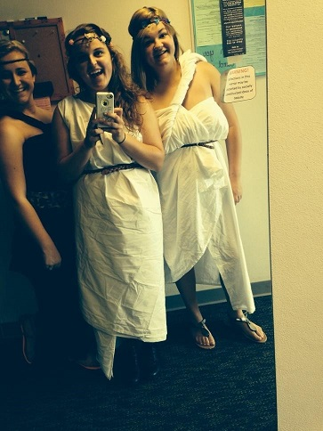
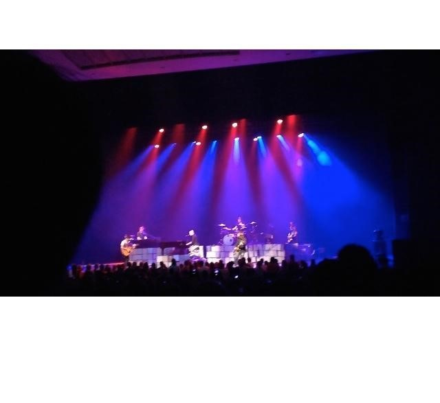
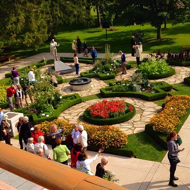
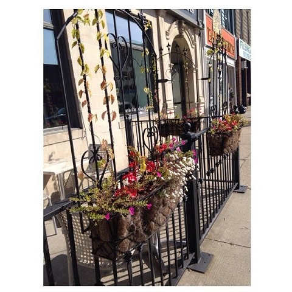

Greeks Gone Modern
September 9th was the day Plato was put on trial by the Academy. Students in the Foundations of American Experience classes joined together to relate and debate their ideas against Plato. Juniors dressed in chitons, and girls placed flowers in their hair along with other plants used as bodily decoration. The chitons were made from bed sheets, and with everyone dressed as if they were actually Greek people, the atmosphere felt as if it was set in that time.
Dr. Arnold explained several of Plato’s ideas (such as abolishing the family and setting women equality) and, from there, the crowd voted for or against these ideas. Many voting rounds the votes were made by the volume of voice and, if it was unclear who won, then the students would move and stand on separate sides and a face count would be the solution. At the end it was brought to everyone’s attention whether or not Plato should be ostracized. Plato wasn’t voted by the people to be ostracized, but Omar Khan had been!
At the end of the trial it was also voted upon who would win the Best Dressed Award. For the females it was Abbey Marek, who wore a beautifully crafted floral head piece. And for the Greek man it was Levi DeHaven, who had an authentic leaf behind his ear.
This convocation lasted no longer than an hour but, in that hour, the participants had a good time, arguing back and forth on whether they agreed or disagreed with Plato’s teachings.
Megan Bennett
Finding the Music Sift Through Your Veins from The Fray
On September 10th, The Fray, an American rock band from Denver, Colorado formed in 2002, visited campus and performed an off-the-charts concert for no more than $10.00 a student. This concert was brought to the attendees inside of Emens Auditorium, which was great for them, for that night it was pouring rain. The Fray played many of their new songs off their new album, Helios, such as “Break Your Plans” and “Love Don’t Die”. The band also played many of the older songs, which the crowd enjoyed tremendously, like “Over My Head,” “Never Say Never,” and “How To Save A Life.”
The BSU crowd became very involved on one of The Fray’s slow songs, “Break Your Plans,” and instead of the old ritual of putting your lighter up in the air and waving it side to side, you could see many cell phones’ flashlights in the air, and that is the new generation for you! During the song “All At Once,” The Fray’s lead singer, Isaac Slade, came into the crowd on the main floor and sang, and the crowd was fond of his closeness and good quality performance. What else can be said about The Fray is, “It was a nice escape from homework and it was a time that was unforgettable,“ quoted from Academy junior Hannah Paige, who attended this concert. Emma Rich, also an Academy junior, said, “Over My Head was my favorite song. It was a great night to be out with my friends, and it was an amazing performance!”
Megan Bennett
Adventuring Across the Border
This year, Mr. Willis and Ms. Ney, and Dr. Arnold took a group of students to Stratford, Ontario, Canada for a weekend of plays at The Stratford Festival, which took place from September 18-21st. Students that visited Canada were: Tommy Arnold, Megan Bennett, Natasha Chemey, Mikayla Craig, Jacob Davis, Elena Dupen, Anna Hawkins, Autumn Kohl, Sam Lang, Ana Ligerraga, Diana Ogrodowski, Anna Rather, and Morgan Stramper. The group left Muncie Thursday morning and after an eight-hour van ride, arrived at the borderline.
Personally, I know that it was amazing for me; to be able to travel up there, look out, and see sightings pass by that maybe I wouldn’t ever see again but did have the chance to see in that moment was good enough to enjoy the beautiful scenery. Anna Hawkins, a senior on the trip, said to, “Clue readers [of this article] in to the fact that they should mention “Deadrock” around Dr. Arnold because he’s secretly a fan of musicals. Deadrock was the town in the musical “Crazy For You”. A group of us decided that the word “Deadrock” would be code to remind everyone how much Dr. Arnold enjoyed the musical.” Anna also stated, “My favorite production was “Hay Fever”. As it was the first play we saw, it definitely set the bar high. The acting was phenomenal, and the set was very detailed. I also really enjoyed being exposed to new types of foods, particularly poutine and pavlova.”
The schedule had five plays set for us to attend. The first night there we saw “Hay Fever”. Friday we watched Shakespeare’s “King Lear” and the musical “Crazy For You”. The next day, “King John” and “The Beaux’ Stratagem” played. For me, they were all equally amazing and while they each one had a differing storyline, they all had a range of emotions that I never thought was possible to portray on stage.
"...Stratford does not disappoint!"
Jacob Davis, a senior who himself is passionate in the thespian world, said, “I believe the Shakespeare trip was very successful in showing Shakespeare's greatness. His plays (King John and King Lear) were interpreted in the traditional Elizabethan style but was understandable to the whole audience. The non Shakespeare plays we saw were fantastic as well, and the musical was enjoyed by everyone who watched. My favorite Shakespeare play was King Lear, and my favorite non-Shakespeare play was Hay Fever. Stratford does not disappoint!”
Along with watching, enjoying, and discussing the plays, the students were able to walk around and explore the city of Stratford for a few hours in the morning. The buildings were beautiful and the Canadian citizens were all very friendly. All in all, the trip was incredible and will forever be memorable.
